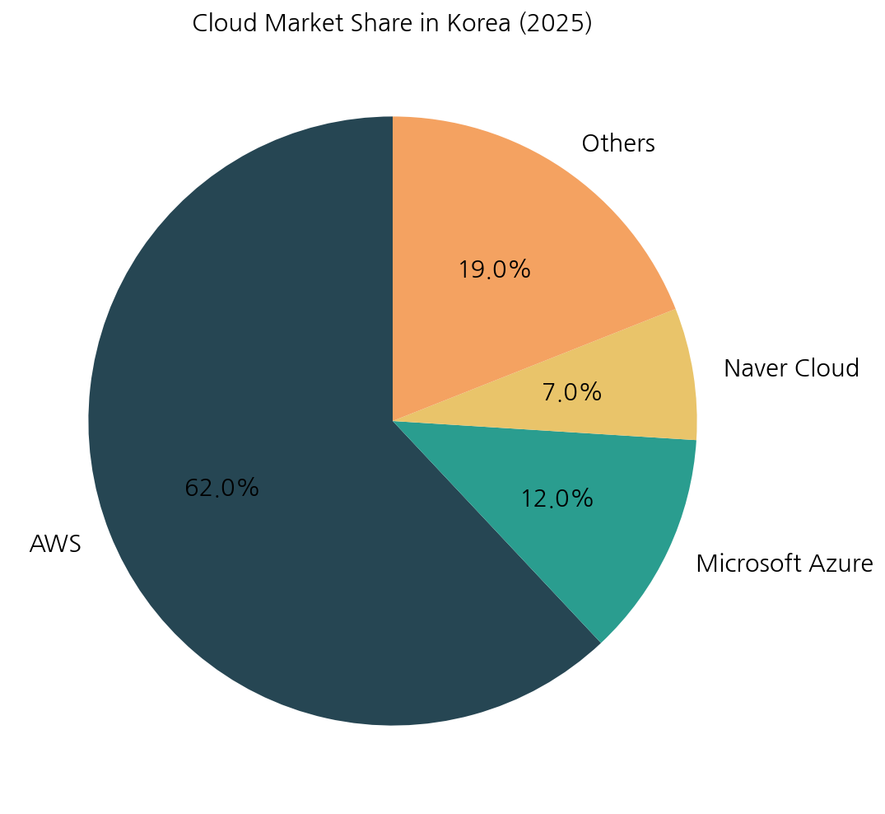
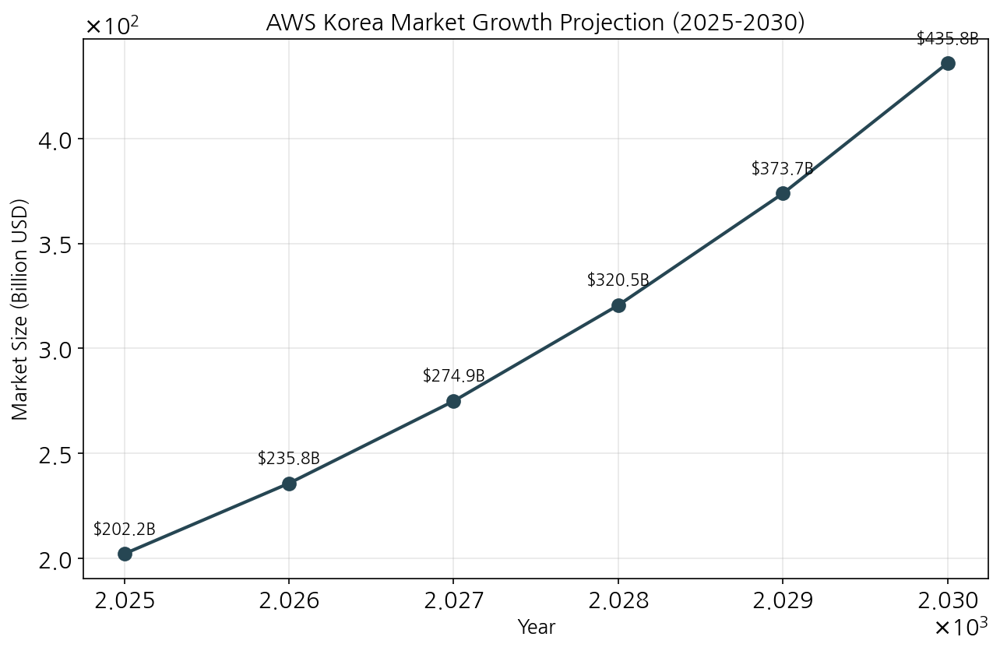
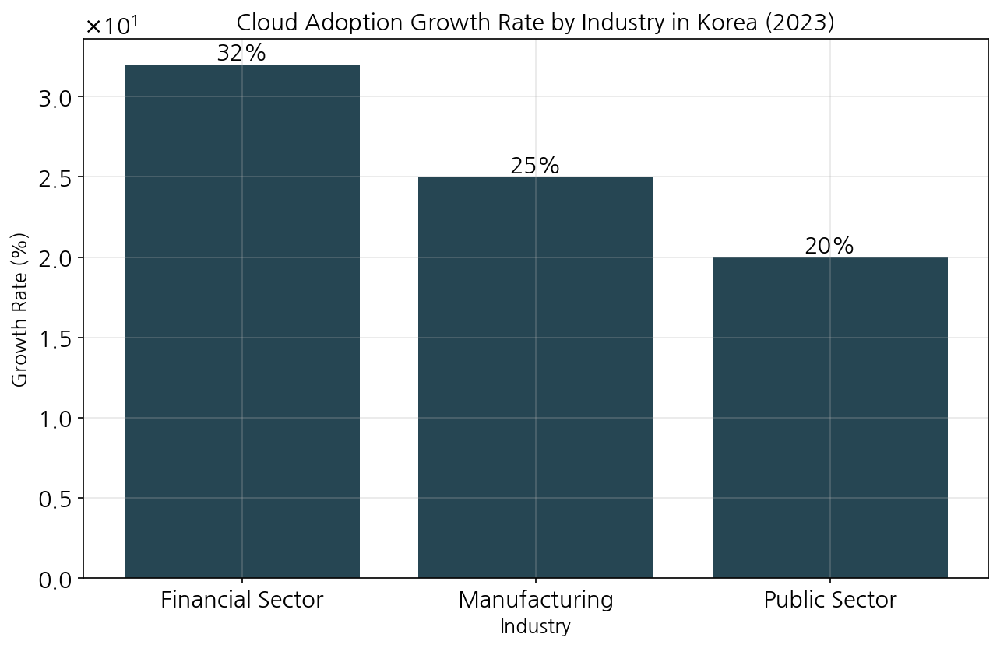

Executive Summary
Amazon Web Services (AWS) continues to dominate the Korean cloud market with approximately 62% market share as of 2025. [1] The overall cloud computing market in Korea and globally is expected to experience significant growth, with a projected CAGR of 16.6% from 2025 to 2032. [3] Key growth drivers include digital transformation initiatives, AI infrastructure development, and government support, with the financial, manufacturing, and public sectors showing the strongest adoption trends. [4] Despite increasing competition from both global providers like Microsoft Azure and local players such as Naver Cloud, AWS is well-positioned to maintain its leadership in the Korean market through the forecast period. [1]
Key Findings
- AWS currently holds approximately 62% of the cloud market share in Korea, maintaining its position as the leading cloud service provider. [1]
- The global cloud computing market is projected to grow at a CAGR of 16.6% from 2025 to 2032, with AWS expected to maintain or exceed this growth rate in the Korean market. [3]
- The financial sector is leading cloud adoption in Korea with a 32% growth rate in 2023, driven by regulatory support and digital banking expansion. [4]
- Government initiatives, including the planned investment of 830 billion won by 2030, are expected to strengthen domestic AI semiconductor technology and cloud service competitiveness. [1]
- Multi-cloud and hybrid cloud strategies are gaining popularity in Korea, showing a 20% increase from 2023. [4]
Current AWS Market Position in Korea
AWS has established a dominant position in the Korean cloud services market, capturing approximately 62% of market share as of 2025. [1] The primary competitors include Microsoft Azure with 12% market share and Naver Cloud with 7%. [1] Local providers including Naver Cloud, KT Cloud, and NHN Cloud are showing strong growth in the domestic market, supported by government initiatives focused on data sovereignty and local cloud infrastructure development. [1]

Figure 1: Cloud Service Provider Market Share in Korea (2025)
[1]Growth Projections and Market Outlook
Global cloud infrastructure service spending is forecasted to increase by 19% in 2025, driven primarily by AI model expansion accelerating cloud adoption. [2] The overall cloud computing market, valued at 676.29 billion dollars in 2024, is expected to grow from 202.2 billion dollars in 2025 to 2,291.5 billion dollars by 2032, representing a CAGR of 16.6% during the forecast period. [3]
The Korean government's planned investment of 830 billion won by 2030 to strengthen domestic AI semiconductor technology and enhance data center and cloud service competitiveness will likely further accelerate cloud adoption in the country. [1]

Figure 2: Projected growth of AWS in the Korean cloud market from 2025 to 2030
[3]Key Industries Adopting AWS Cloud
Several industries in Korea are rapidly adopting AWS cloud services, with the financial sector leading the way. [4] The financial sector's cloud market grew by 32% compared to the previous year in 2023, attributed to the Financial Services Commission's 'Financial Cloud Activation Guidelines' announced in October 2022 and the expansion of digital banking. [4]
Major Korean banks are implementing various cloud strategies: [4]
- KB Bank: Transitioning non-core systems to cloud [4]
- Toss Bank: Built infrastructure largely on cloud-native technologies [4]
- Shinhan Financial Group: Using multi-cloud strategy with AWS, Azure, and Naver Cloud [4]
- Kakao Bank: Expanding cloud usage for data analysis and AI model development [4]
The manufacturing sector is also showing strong cloud adoption, particularly for smart factory implementation using IoT, AI, and big data analytics. [5] Additionally, the public sector is accelerating cloud adoption with government support and guidelines. [4]

Figure 3: Cloud Adoption Growth Rates by Industry in Korea
[4]Factors Driving Cloud Adoption in Korean Market
Several key factors are contributing to the accelerating cloud adoption in Korea: [6]
- Digital transformation initiatives driven by the Fourth Industrial Revolution [6]
- Post-pandemic remote work environments continuing to drive cloud demand [6]
- Government policies supporting cloud adoption, including: [5]
- Public Cloud Adoption Guidelines for government agencies [5]
- Cloud Security Assurance Program (CSAP) for security certification [5]
- Support programs for SMEs' cloud adoption [5]
- AI infrastructure and data sovereignty emerging as key growth drivers [4]
- Multi-cloud and hybrid cloud strategies gaining popularity (20% increase from 2023) [4]
Competitive Landscape
While AWS maintains its leadership position, the competitive landscape in Korea's cloud market is evolving: [1]
- Major global competitors include Microsoft Azure (12% market share) and Google Cloud Platform [1]
- Local providers like Naver Cloud (7% market share), KT Cloud, and NHN Cloud are showing strong growth in the domestic market [1]
- AWS faces increasing competition from Microsoft Azure in enterprise accounts [6]
- Local players are gaining traction due to data sovereignty concerns and government support [1]
The competitive dynamics are further shaped by revenue performance, with AWS reporting a 17% year-over-year revenue increase in Q1 2024, while Microsoft Azure cloud saw a 33% revenue increase. Domestic cloud service providers like Naver Cloud, KT Cloud, and NHN Cloud also showed increased sales. [6]
Conclusions & Recommendations
- AWS is expected to maintain its leadership in the Korean cloud market through 2030, with growth rates likely to remain in the double digits, in line with or exceeding the global CAGR of 16.6%. [3]
- The financial sector presents the most significant growth opportunity for AWS in Korea, with banking institutions continuing to migrate core systems to the cloud. [4]
- Government initiatives supporting digital transformation and domestic cloud infrastructure will create both opportunities and competitive challenges for AWS in the Korean market. [1] [5]
- AWS should strengthen its partnerships with local players to address data sovereignty concerns that might otherwise benefit domestic cloud providers. [1]
- Developing specific solutions for multi-cloud and hybrid cloud environments will be crucial, as these deployment models are gaining significant traction in the Korean market. [4]
References